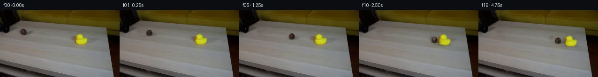

![首帧]()

Round 00
2026-11-04T19:51:09.556163+00:00像素候选变化代码 +238/−0inspection 更新
pixels 27d6d4cc66ae17cd · code 59f0ff312afc1f8b
查看本轮 generate.py 真实 diff
--- previous/generate.py
+++ current/generate.py
@@ -0,0 +1,238 @@
+"""Deterministic local pixel animation from the supplied single photograph."""
+from pathlib import Path
+import json
+import numpy as np
+from PIL import Image, ImageDraw
+from scipy import ndimage as ndi
+from scipy.sparse import lil_matrix
+from scipy.sparse.linalg import spsolve
+from artifact_io import save
+
+ROOT = Path(__file__).resolve().parent
+TMP = ROOT / '.tmp'
+TMP.mkdir(exist_ok=True)
+SOURCE = np.asarray(Image.open(ROOT / 'first_frame.png').convert('RGB'), dtype=np.float64)
+H, W = SOURCE.shape[:2]
+Y, X = np.mgrid[:H, :W]
+
+# Foreground matte follows measured yellow/orange chroma, including the dark eye.
+r, g, b = SOURCE.transpose(2, 0, 1)
+roi = (X >= 158) & (X <= 189) & (Y >= 50) & (Y <= 76)
+seed = roi & (((r > 135) & (g > 115) & (b < 65)) |
+ ((r > 125) & (r-g > 35) & (b < 75)))
+seed = ndi.binary_fill_holes(seed)
+duck_region = ndi.binary_dilation(seed, iterations=2)
+ball_region = (((X-50.0)/10.0)**2 + ((Y-46.6)/9.0)**2 < 1) | \
+ (((X-60.0)/15.0)**2 + ((Y-48.5)/7.0)**2 < 1)
+duck_erase = ndi.binary_dilation(seed, iterations=2) | \
+ (((X-175.0)/23.0)**2 + ((Y-66.0)/15.0)**2 < 1)
+forbidden = ndi.binary_dilation(ball_region | duck_erase, iterations=2)
+
+
+def repair_region(image, mask, name):
+ """Choose a same-photo wood donor, then preserve its gradients with Poisson blending."""
+ ring = ndi.binary_dilation(mask, iterations=3) & ~mask
+ ry, rx = np.where(ring)
+ my, mx = np.where(mask)
+ candidates = []
+ for dx in range(-65, 66):
+ if abs(dx) < 24:
+ continue
+ for dy in range(int(round(.13*dx))-7, int(round(.13*dx))+8):
+ sy, sx = my+dy, mx+dx
+ if sy.min() < 34 or sy.max() >= 104 or sx.min() < 30 or sx.max() >= 221:
+ continue
+ if forbidden[sy, sx].any():
+ continue
+ qy, qx = ry+dy, rx+dx
+ if qy.min() < 0 or qy.max() >= H or qx.min() < 0 or qx.max() >= W:
+ continue
+ delta = SOURCE[ry, rx] - SOURCE[qy, qx]
+ offset = delta.mean(axis=0)
+ score = float(np.mean((delta-offset)**2))
+ candidates.append((score, dx, dy, offset))
+ score, dx, dy, offset = min(candidates, key=lambda p: p[0])
+ guide = ndi.shift(SOURCE, (-dy, -dx, 0), order=1, mode='nearest') + offset
+ ids = np.full((H, W), -1, dtype=int)
+ ids[my, mx] = np.arange(len(my))
+ A = lil_matrix((len(my), len(my)), dtype=float)
+ rhs = np.zeros((len(my), 3))
+ for k, (yy, xx) in enumerate(zip(my, mx)):
+ A[k, k] = 4
+ for qy, qx in [(yy-1,xx),(yy+1,xx),(yy,xx-1),(yy,xx+1)]:
+ rhs[k] += guide[yy, xx]-guide[qy, qx]
+ if mask[qy, qx]:
+ A[k, ids[qy, qx]] = -1
+ else:
+ rhs[k] += image[qy, qx]
+ result = image.copy()
+ result[my, mx] = np.clip(spsolve(A.tocsr(), rhs), 0, 255)
+ return result, {'name':name,'donor_shift':[dx,dy], 'ring_rmse':float(np.sqrt(score)),
+ 'erased_pixels':int(mask.sum())}
+
+BALL_BG, ball_repair = repair_region(SOURCE, ball_region, 'ball_and_shadow')
+BACKGROUND, duck_repair = repair_region(BALL_BG, duck_erase, 'duck_and_shadow')
+
+# Blue-channel color matting removes beige fringes; source eye is preserved by hole filling.
+alpha = np.clip((BACKGROUND[:,:,2]-SOURCE[:,:,2]) /
+ np.maximum(BACKGROUND[:,:,2]-22, 30), 0, 1) * duck_region
+alpha[seed] = 1
+alpha[alpha < .12] = 0
+DUCK_ALPHA = alpha
+DUCK_PRE = SOURCE - BACKGROUND*(1-alpha[:,:,None])
+DUCK_PRE *= (alpha > 0)[:,:,None]
+# Clamp only the reconstructed foreground, avoiding negative edge colors.
+DUCK_PRE = np.minimum(np.maximum(DUCK_PRE,0),255*alpha[:,:,None])
+
+LIGHT = np.array([-.55,-.65,.75]); LIGHT /= np.linalg.norm(LIGHT)
… diff truncated; 151 more lines …